Number Spark: Math Puzzles
Make mental math part of your day.
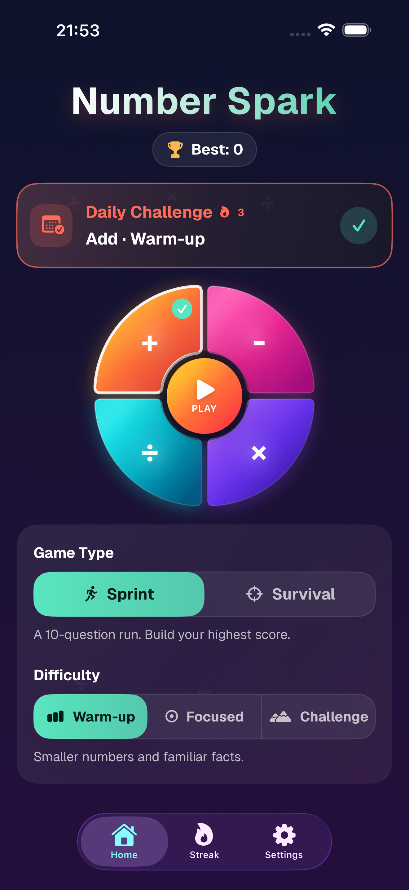
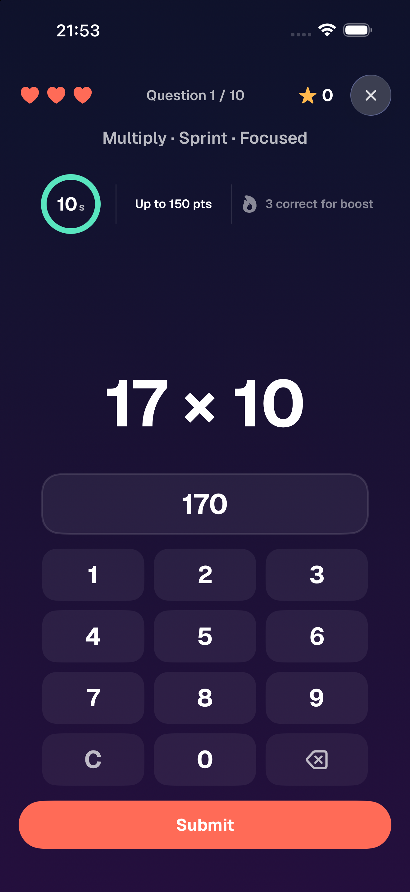
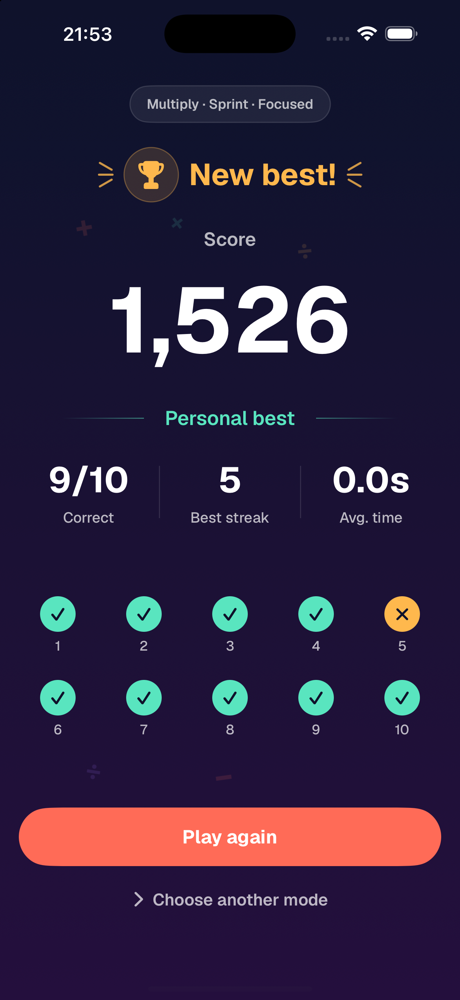
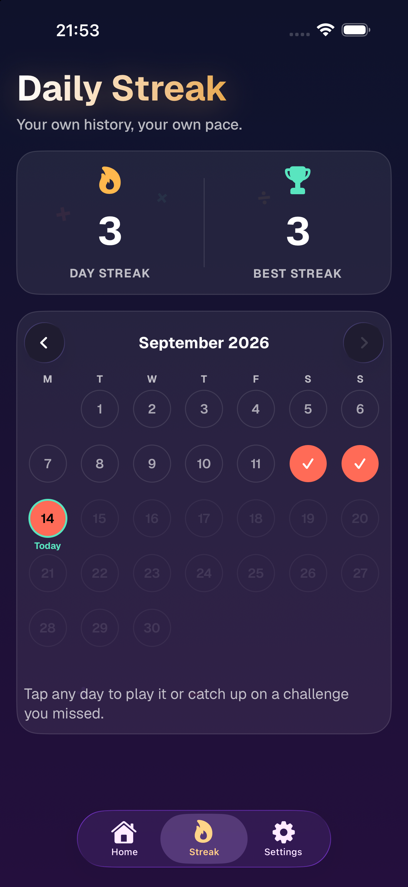
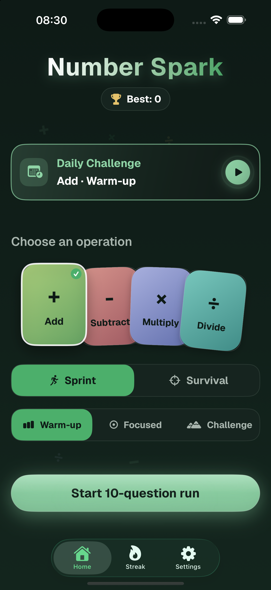
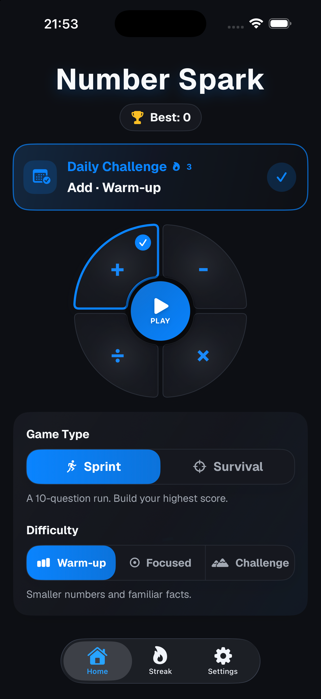
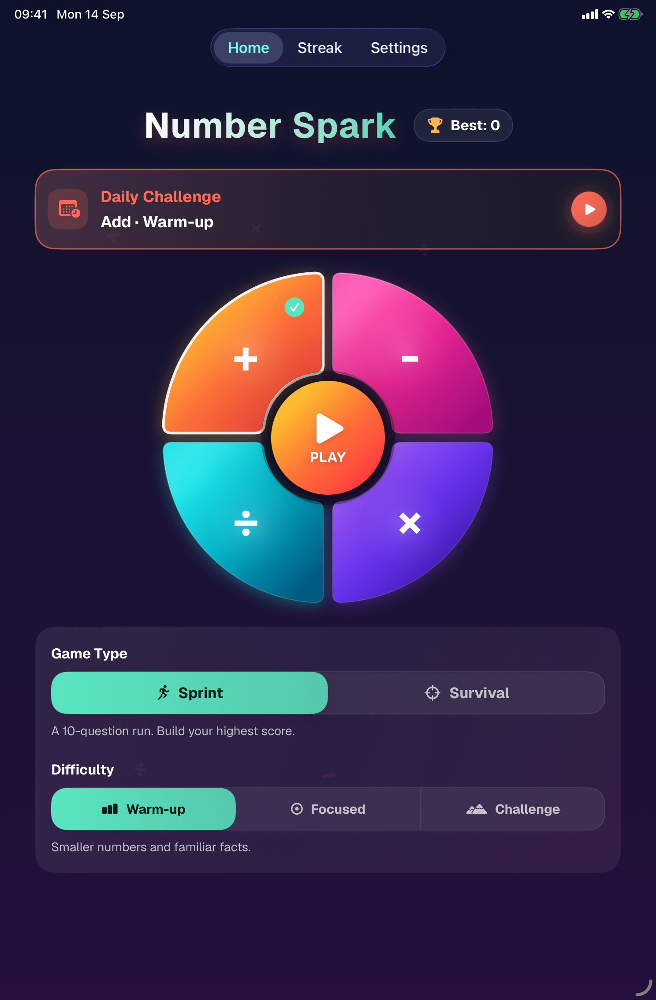
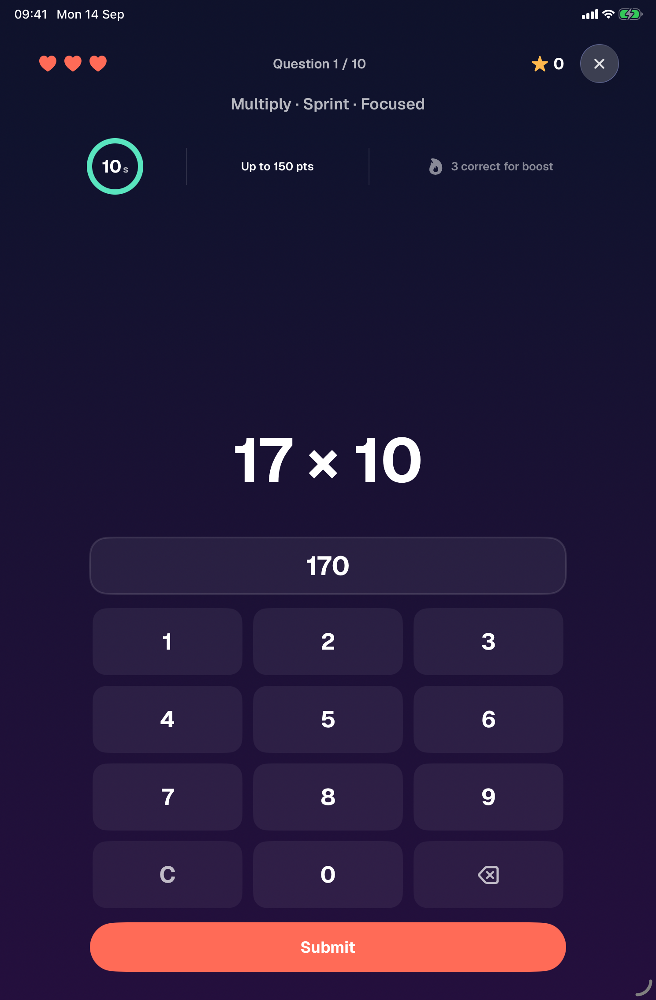
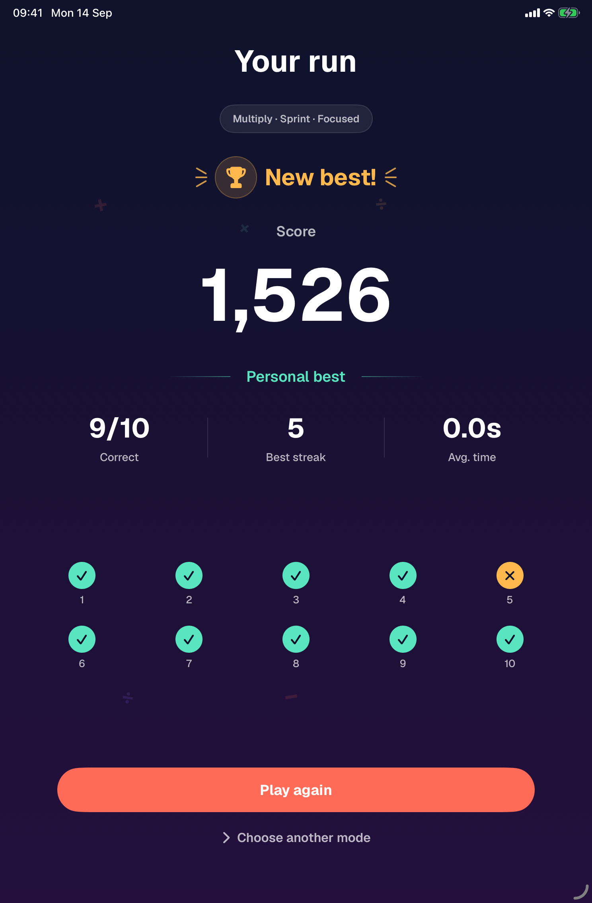
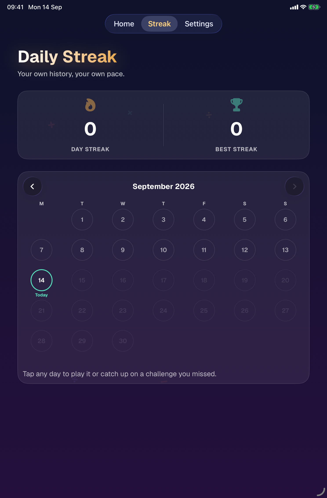
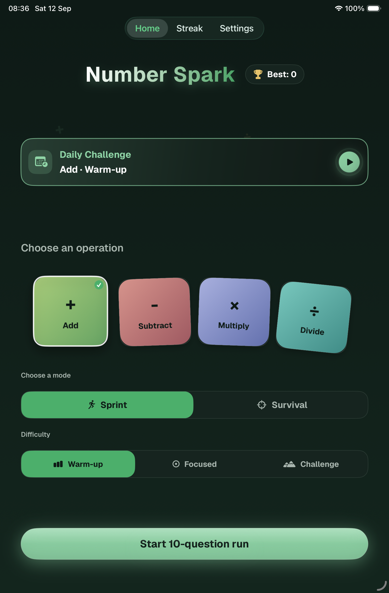
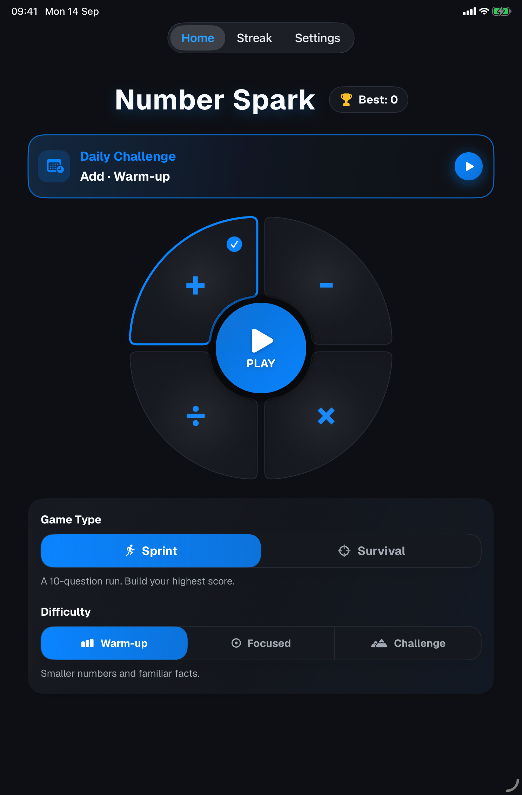
About Number Spark: Math Puzzles
Number Spark: Math Puzzles appears as Number Spark on your device. Make addition, subtraction, multiplication, and division part of your day with quick, repeatable challenges.
Features
Make It Yours: Play with bold Vibrant colors, calm Nature greens, or a clean Minimal look that follows your device's Light and Dark Mode. Vibrant is included with free play; Nature and Minimal are included with the optional one-time Pro unlock.
A Challenge Every Day: Get a personalized Daily Challenge based on your recent play. Track completed days in your calendar, build your daily streak, and catch up on challenges you missed. Daily progress is personal and stays on your device.
Two Ways To Play: Sprint: take on a 10-question run against the clock.
Survival: keep going as the time allowed for each question gets shorter.
Find Your Challenge: Practice all four operations at Warm-up, Focused, or Challenge difficulty. Choose a comfortable starting point or push yourself with tougher numbers.
Chase Your Best: Earn bonuses for quick answers and consecutive correct answers. Track your best scores for each operation, mode, and difficulty, then review your answers after each run. Three hearts give you room to recover, and mistakes reveal the correct answer.
Made for iPhone and iPad: Play with layouts that adapt to your screen and available window. Use the on-screen keypad or a hardware keyboard, and adjust haptic feedback in Settings.
Optional Game Center: Compare regular Sprint and Survival scores on Game Center leaderboards. Daily Challenges remain personal, and you can play without Game Center.
Free Daily Play: Start with five free runs per day. The optional one-time Number Spark Pro purchase unlocks unlimited play and the Nature and Minimal themes. No subscription. Optional tips support development and do not unlock features.
Frequently asked questions
Why does the app say Number Spark?
Number Spark: Math Puzzles is the App Store name. On your device and inside the app, it is called Number Spark.
Is it free to play?
You get five free runs per local calendar day, shared across regular runs, Daily Challenges, catch-up, and replays. The allowance resets each day.
What does Number Spark Pro include?
The optional one-time purchase unlocks unlimited play and the Nature and Minimal themes. Vibrant is included with free play. There is no subscription; optional tips support development and do not unlock features.
Do I need an account or internet connection?
No account is required for local gameplay, which works offline. Purchases, restoring purchases, and optional Game Center services use Apple services.
How do Sprint and Survival work?
Sprint is a 10-question run. Survival keeps going as the time allowed for each question gets shorter. A wrong answer or timeout costs one of three hearts and reveals the correct answer.
Can I catch up on missed Daily Challenges?
Yes. Open the Streak tab and select a past day to catch up. Daily Challenges use your recent play to choose an operation and difficulty. Completed days count toward your streak, and daily results stay personal rather than going to leaderboards.
Does it work on iPad?
Yes. Layouts adapt to iPhone, iPad, and the available window. You can use the on-screen keypad or a hardware keyboard.
Are there ads or tracking?
There are no ads, analytics, or tracking SDKs. Scores, daily history, and settings stay locally on your device. Apple handles purchases and optional Game Center services.